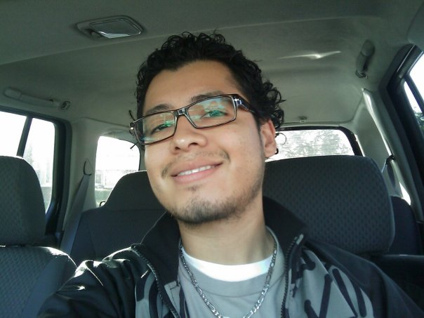

Nehemias Serrano

Summary
I am an Army Veteran that is hard working and goal oriented, always looking for ways to grow as a person and professional.
Education
Santa Fe High School - Class of 2000
United Education Institute - Information Technology Program - Certificate of Completion 2009
Work Experience
Aviation Operations Sergeant 2002-2008
- Responsible for coordinating and facilitating flight operations for the Army's aircraft fleet.
- Preparing and disseminating flight information, monitoring aircraft progress, maintaining flight records, preparing pre-accident plans.
- Managing flight operations within a tactical operations center or similar environment.
Skills
- Customer Service Skills
- Strong Leadership
- Microsoft Office
- Organization Skills
- Work in a team or individually
Other
About Me